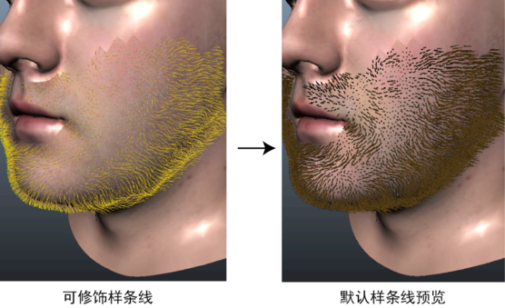

可修饰样条线是不可渲染的样条线基本体，您可以使用基于 Xgen 笔刷的修饰工具对其进行雕刻和定位。使用可修饰样条线可创建逼真的毛发和头发，特别是短头发、胡须和胡茬。可修饰样条线描述与其他 XGen 描述一样绑定到网格曲面，并渲染为默认样条线基本体。
当您创建可修饰样条线描述时，XGen 使用可修饰样条线随机填充绑定的几何体。预览 ( ) 描述时，XGen 会在与可修饰样条线相同的位置生成与之形状相同的默认样条线。
) 描述时，XGen 会在与可修饰样条线相同的位置生成与之形状相同的默认样条线。

雕刻样条线时，XGen 会自动为您绘制的各个属性更新一系列 PTEX 贴图。这些贴图驱动对应的默认样条线基本体。贴图另存为描述的 groom 文件夹中的 PTEX 文件（请参见贴图文件位置）。完成雕刻样条线和设置造型后，您可以继续使用 XGen 修改器、Ptex 贴图和表达式将修饰定形为默认样条线。
重要：
可修饰的样条线未跟随变形或动画网格。对于绑定到描述的网格的静态姿势，必须进行修饰。若要查看修饰是否跟随网格，必须在播放动画之前预览修饰的 XGen 默认样条线版本。